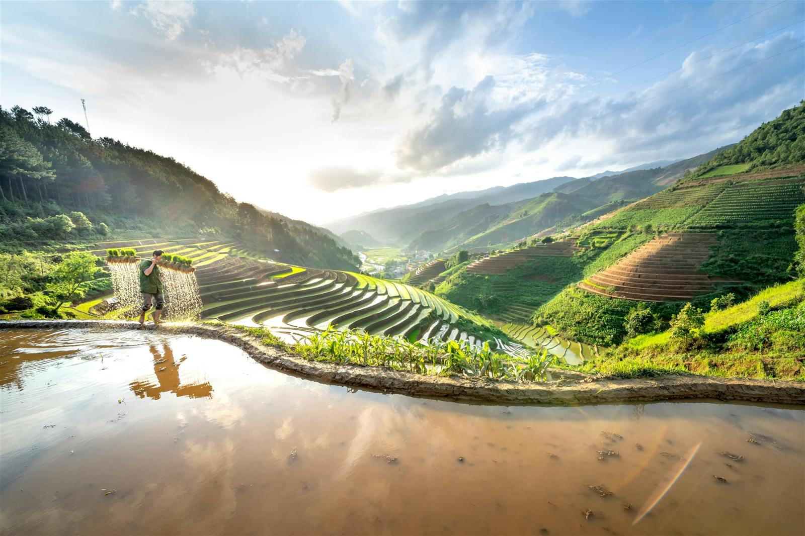

Sapa
A highland town in the Hoang Lien Son range, home to Fansipan, the highest peak in Indochina, and the H'mong, Red Dao and Tay communities who have farmed its terraces for generations.
Overview
Sapa is a famous highland town perched high in the Hoang Lien Son mountain range in the north of Vietnam. It is famous for its sweeping green valleys, cascading rice terraces and vibrant indigenous cultures, but most notably for being home to the spectacular Fansipan Mountain, the highest peak in all of Indochina. Sapa serves as the ultimate gateway to reset your nervous system by surrounding yourself with pristine nature and diving into the unique highland cultures of the H'mong, Red Dao and Tay ethnic minority groups. Whether you are relaxing at a quaint homestay or trekking through jaw-dropping valleys, Sapa is sure to steal your heart in one way or another.
Highlights
- Trek through the world-famous rice fields
- Visit the ethnic minority villages and learn from the vibrant indigenous groups
- Take the cable car up to Fansipan Summit, the highest peak in Indochina
- Take a traditional Red Dao herbal bath with herbs picked from the surrounding mountains
- Take a local handicraft class at a Hmong handicraft store
- Rent a motorbike and explore the lush valleys
- Chase waterfalls and find the perfect spots hidden in the mountains
- Stay at a local family homestay and enjoy a home-cooked meal and traditional rice wine with the locals
- Drive the famous O Quy Ho Pass
Culture
Sapa is world renowned for its unique culture, being one of the few places in Southeast Asia where distinct indigenous hill tribes still preserve centuries-old ways of life. The region is home to several distinct ethnic groups, such as the Hmong, Red Dao, Tay and Giay, each with its own completely distinct language, customs and social structure. These groups live across the valley, their knowledge, labour and traditions inseparable from the land itself. The iconic rolling rice terraces have been hand-carved into the mountains over hundreds of years, part of a wider system of farming, water management, seasonal movement and ancient craftsmanship. The Muong Hoa Valley is not just a scenic landscape but a living testament to the dedication, hard work and ingenuity of the farming communities who inhabit these sacred mountains. Close to Sapa is the largest and most vibrant ethnic highland market in the region, the Bac Ha Sunday Market, a crucial social and trading hub for local hill tribes, notably the Flower Hmong.
Travel Tips
- Best way to get there is a sleeper bus from Hanoi, around 6–7 hours
- For a more scenic route, take the Sapa Express train from Hanoi
- Book accommodation in the small villages outside Sapa town for a more authentic experience
- Don't be put off by the weather forecast, it's often wrong, Sapa's valley is beautiful in every season
- Bring warmer layers, waterproofs included, the northern mountains are cooler than you'd expect
- Bring suitable trekking shoes, as mountain roads can be muddy and slippery
- Please don't give money to children selling goods, it keeps them out of education. To support local ethnic communities, buy from the older women or the set market stalls instead
Best Time to Visit
All seasons in Sapa have their own unique charm, so choose the best time to visit according to what you want to see. In Autumn (September–November) the famous rice terraces turn from green to golden yellow as the harvest begins. Spring (March–May) is excellent for hiking, with clear skies as the water-pouring season starts and the valleys turn to reflective mirrors. Summer (June–August) brings the mountains to their most intensely lush and vibrant green, though a high chance of rain can make the trails slippy. Winter (December–February) is very cold and foggy, with temperatures dropping below 10°C and the possibility of snow on Fansipan Peak.
Plan Your Trip